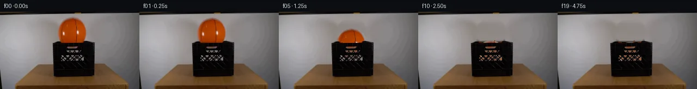

![首帧]()

Round 00
2026-11-04T19:51:33.543112+00:00像素候选变化代码 +193/−0inspection 更新
pixels 9bb447cbed390998 · code 80b2e408e6529f27
查看本轮 generate.py 真实 diff
--- previous/generate.py
+++ current/generate.py
@@ -0,0 +1,193 @@
+from pathlib import Path
+
+import cv2
+import numpy as np
+from PIL import Image, ImageDraw, ImageFont
+
+from artifact_io import save
+
+
+ROOT = Path(__file__).resolve().parent
+SOURCE = np.asarray(Image.open(ROOT / "first_frame.png").convert("RGB"), dtype=np.uint8)
+H, W = SOURCE.shape[:2]
+
+
+def reconstruct_static_scene(source: np.ndarray) -> np.ndarray:
+ """Remove the source ball locally while retaining the locked scene."""
+ yy, xx = np.mgrid[:H, :W]
+ # The slightly oversized ellipse removes the orange edge and its tiny halo.
+ remove = (((xx - 133.0) / 30.5) ** 2 + ((yy - 38.0) / 30.5) ** 2 <= 1.0)
+ remove &= yy >= 5
+ mask = (remove.astype(np.uint8) * 255)
+ # TELEA uses only neighboring pixels: wall above and crate/interior below.
+ bgr = cv2.cvtColor(source, cv2.COLOR_RGB2BGR)
+ clean = cv2.inpaint(bgr, mask, 5.0, cv2.INPAINT_TELEA)
+ clean = cv2.cvtColor(clean, cv2.COLOR_BGR2RGB)
+
+ # On the exposed wall, suppress tiny inpaint streaks using a locally sampled
+ # wall field. Feathering retains the real vignette and photographic noise.
+ wall = clean.copy().astype(np.float32)
+ for y in range(5, 56):
+ left = source[y, 94:102].astype(np.float32).mean(axis=0)
+ right = source[y, 164:172].astype(np.float32).mean(axis=0)
+ for x in range(102, 164):
+ u = (x - 102) / 61.0
+ wall[y, x] = left * (1.0 - u) + right * u
+ wall = cv2.GaussianBlur(wall, (0, 0), 1.8)
+ feather = np.clip((29.8 - np.sqrt((xx - 133.0) ** 2 + (yy - 38.0) ** 2)) / 4.0, 0, 1)
+ feather *= (yy < 56)
+ out = clean.astype(np.float32) * (1.0 - feather[..., None]) + wall * feather[..., None]
+ return np.clip(np.rint(out), 0, 255).astype(np.uint8)
+
+
+def make_ball_sprite(source: np.ndarray, scale: int = 4):
+ """Build a source-derived full basketball sprite with antialiased alpha."""
+ x0, y0, size = 104, 9, 59
+ crop = source[y0:y0 + size, x0:x0 + size].astype(np.float32)
+ texture = np.empty_like(crop)
+ # The visible source supplies the entire upper body. The part originally
+ # hidden by the rim is completed by spherical reflection and darkening.
+ for y in range(size):
+ if y <= 45:
+ texture[y] = crop[y]
+ else:
+ reflected = max(2, min(44, 58 - y))
+ shade = 0.78 - 0.08 * ((y - 46) / 12.0)
+ texture[y] = crop[reflected] * shade
+
+ yy, xx = np.mgrid[:size, :size]
+ cx, cy, radius = 29.0, 29.0, 28.6
+ dist = np.sqrt((xx - cx) ** 2 + (yy - cy) ** 2)
+ alpha = np.clip(radius + 0.65 - dist, 0.0, 1.0)
+
+ # Keep the lower completion orange and source-like even where reflected
+ # pixels happen to include the dark top-of-frame strip near the sphere edge.
+ lower = (yy > 45) & (alpha > 0)
+ bad = lower & ((texture.max(axis=2) - texture.min(axis=2)) < 12)
+ radial = np.clip(1.0 - dist / radius, 0, 1)
+ replacement = np.stack([
+ 126 + 73 * radial,
+ 43 + 35 * radial,
+ 7 + 8 * radial,
+ ], axis=2)
+ texture[bad] = replacement[bad]
+
+ rgba = np.dstack([np.clip(texture, 0, 255), alpha[..., None] * 255]).astype(np.uint8)
+ rgba_hi = cv2.resize(rgba, (size * scale, size * scale), interpolation=cv2.INTER_CUBIC)
+ return rgba_hi, (x0, y0), scale
+
+
+def crate_foreground(source: np.ndarray):
+ """Extract the neutral/dark rigid crate pixels as a foreground occluder."""
+ rgb = source.astype(np.float32)
+ gray = cv2.cvtColor(source, cv2.COLOR_RGB2GRAY).astype(np.float32)
+ chroma = rgb.max(axis=2) - rgb.min(axis=2)
+ dark = np.clip((142.0 - gray) / 54.0, 0.0, 1.0)
+ neutral = np.clip((62.0 - chroma) / 32.0, 0.0, 1.0)
+ alpha = dark * neutral
… diff truncated; 106 more lines …